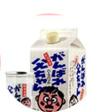

ABOUT
journey in tokyo city

SAKURA
벚꽃은 오래전부터 일본을 대표하는 꽂이며.
대표적인 관광명소는 우에노공원이 있습니다.
그 밖에도 시부야, 신주쿠 등 거리 곳곳에 벚꽃이 있기에
거리를 걸으며 아름다운 벚꽃을 구경하실수 있습니다.

Tokyo Tower
도쿄 타워는 도쿄의 심볼이며,
높이가 333m나 되는 큰 타워입니다.
도쿄 여행에 꼭 뺴놓을 수 없는
관광명소 중 하나입니다.

SAKE
사케는 일본을 대표하는 술로
쌀로 빚은 술입니다.
데워서 마시는 사케 방법과
차갑게 마시는 사케가 있습니다.